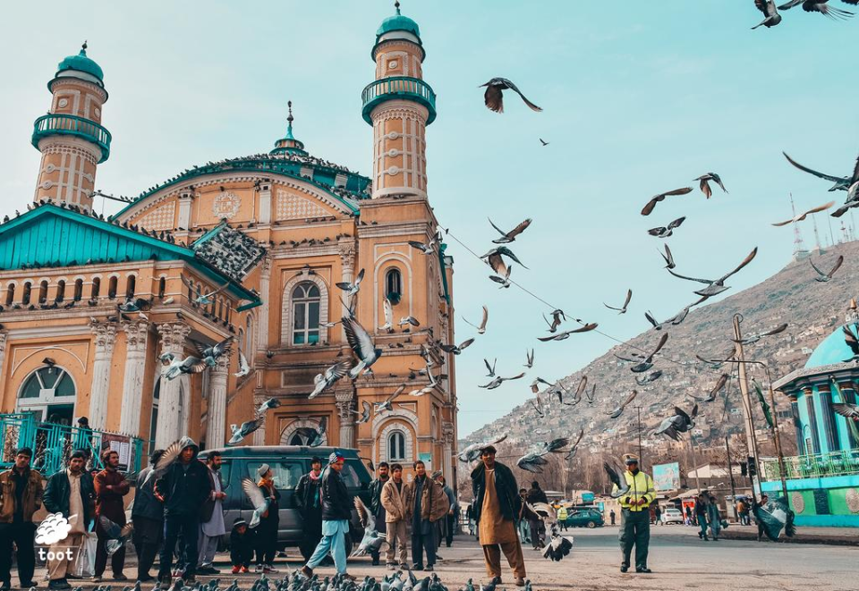
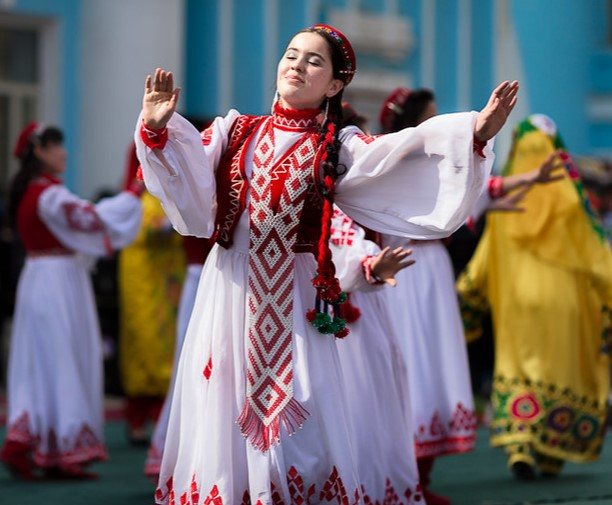
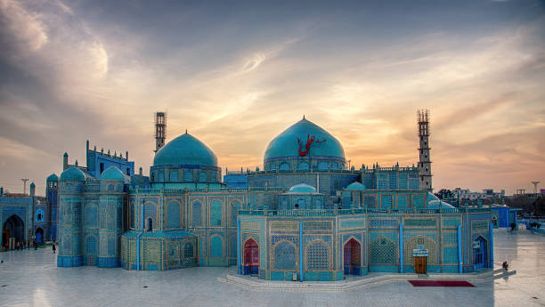
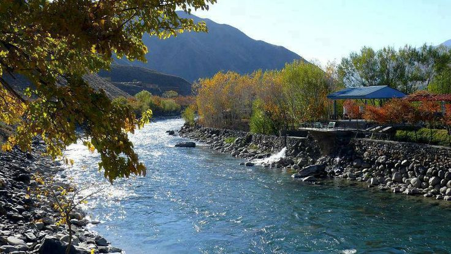
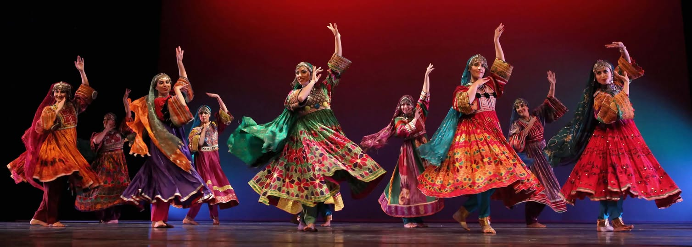
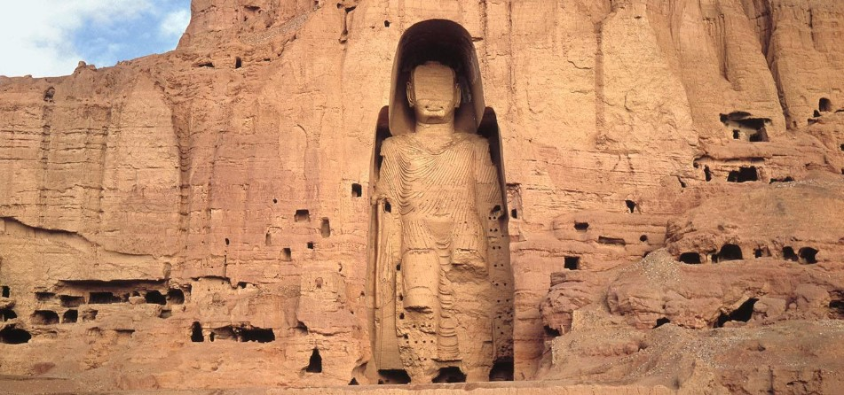
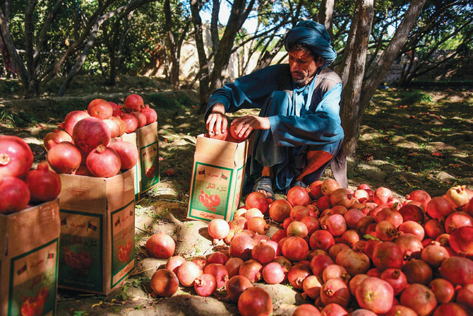

Shah-Do Shamshira Kabul
Shah Do Shamshira is a historic mosque in
Kabul, Afghanistan, known for its unique blend of Islamic and European architecture.

Mosque of Herat
It is one of the most beautiful and oldest historical landmarks in Afghanistan

Traditional Clothing and Jewerly of Badakhshan
The traditional attire of Badakhshan women includes a long, white dress with bright red embroidery and wide sleeves,
symbolizing cultural elegance. Their look is completed with handcrafted jewelry, such as colorful bead earrings and
detailed headpieces,showcasing the region's rich artistic heritage.

Haft Mewa Afghan New Year Delight
Haft Mewa is a delicious mix of dried fruits served during Nowruz, symbolizing joy, harmony, and tradition

Mazar-i-Sharif
Mazar-i-Sharif is a famous for the stunning Blue Mosque, also known as
Rawza Mubarak. It is a center of spirrituality,culture, and Nowruz
celebrations, attracting visitors from across Afghanistan and beyond.

Paceful Rivers of Panjshir
Panjshir is famous for its stunning natural beauty, especially its clear rives
flowing between mountains.
This peaceful riverside spot shows the calm and refreshing side of Afghan nature.

Attan Dance-Logar
The Attan is a traditional Afghan dance performed with rhythmic
steps and drumbeats. In Logar, this dance holds cultural importance and
is performed during celebrations and national events with great enthusiasm.

Buddhas of Bamiyan
The Buddhas of Bamiyan were two monumental statues carved into a cliff
in the Bamiyan Valley. They stood as symbols of Afghanistan's rich Buddhist
heritage and attracted travelers from around the world before their destruction in 2001.

Wardak-Traditional Attire
Wardak is known for its colorful traditional clothing, especially worn by girls during cultural
festivals and celebrations.The dresses are often decorated with
coins and fine embroidery, symbolizing beauty and heritage.

Kandahar-Land of Pomegranates
Kandahar is famous for producing some of the world's sweetest pomegranates.
The fruit is not only a symbol of local agriculture but also a source of pride for Afghan exports.